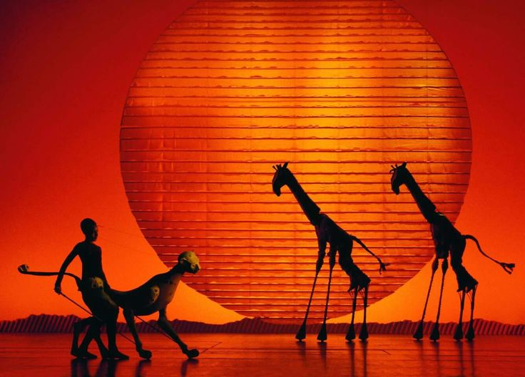

Estudiantes de 6° cuatrimestre - Licenciatura en Diseño Gráfico Digital
Este proyecto teatral es una iniciativa de los estudiantes del 6° cuatrimestre, quienes combinaron sus conocimientos de diseño con las artes escénicas para crear una experiencia inmersiva y creativa.
Objetivo: Fusionar el diseño gráfico digital con el teatro para explorar nuevas formas de expresión visual.
Público: Jóvenes y adultos interesados en las artes visuales, escénicas y la innovación digital.
